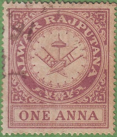
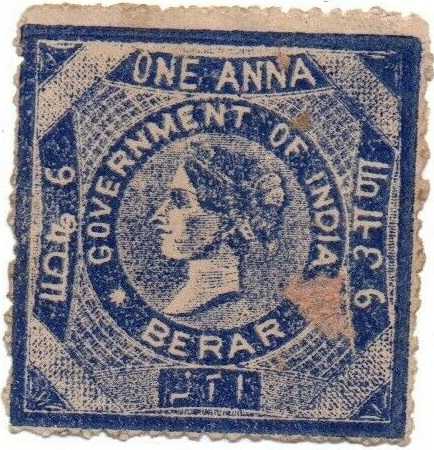
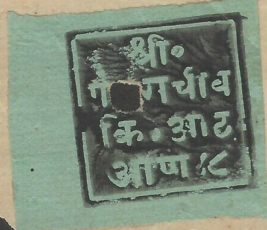
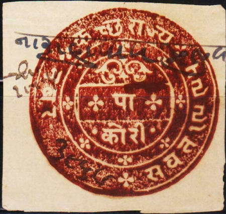
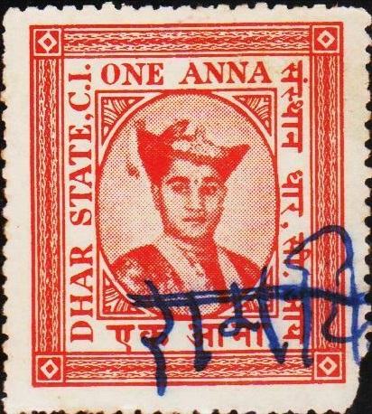
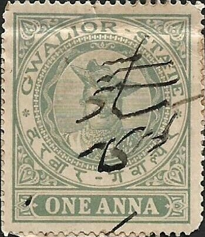
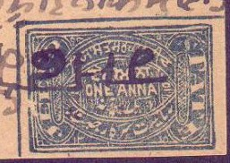

Note: on my website many of the
pictures can not be seen! They are of course present in the
catalogue;
contact me if you want to purchase it.
Many states of India issued their own revenue stamps, examples:
The Forbin guide lists these stamps upto about 1910. Peter Valdner of Slovakia gave me this list of states that issued fiscal stamps (according to Koeppel Manners):

"AKALKOT STATE COURT FEE": flag in circle, the
following values were issued in 1904 (value always in red): 1 a
violet, 2 a blue, 3 a brown, 4 a green, 6 a brown, 8 a lilac, 12
a yellow, 1 R red, 2 R orange, 4 R red, 5 R blue.
Berar: Fiscal stamp of India, overprinted "BERARS" in
red, blue or black.

Example of Berar 1 a blue, Queen Victoria, issued in 1887, two
different types (note the placement of the first "A" of
"ANNA" and the "T" of
"GOVERNMENT"). According to the Forbin guide there are
30 types of this stamp.
Berar: 1887 issue; the following values exist: 1 a red, 2 a
brown, 3 a black, 4 a violet, 5 a blue, 6 a orange, 8 a green, 10
a brown, 12 a red, 1 R blue, 1 1/2 R brown, 3 R yellow and 6 R
violet. 15 different types exist in one sheet (see for example
the placement of the first "N" of "ANNAS" and
the "N" of "GOVERNMENT" in the above 4 a
stamps).
Bharatpur, clearly designed after the Queen Victoria receipt
stamp.
Bhawulpore State
Bhopal, 1880 onwards, 1 a black, with embossing in the center.
With year inscribed at the bottom left in Arabic, here 1301 and
1303. Similar fiscal stamps exist with inscription 1297, 1300,
1301, 1303.
Also with inscription "BHOPAL 1 ANNA" 1311 and 1320.
Issued from 1880 to 1901.

Bhor 1880, the following values were issued: 2 a black on lilac,
4 a black on red, 8 a black on green and 1 R black on yellow.
Bikaner State receipt stamps, around 1930.
(inscription: "BILKHA DARBAR SHRI KANTHADVALA")

1880: Cutch; inscription entirely in Gujarati language, 17 values
should exists according to the Forbin Guide, ranging from 1/4
Kori to 400 Kori (1/4 Kori = 1 Anna), where this state is listed
as Coutch. Forbin says these stamps exists tete-beche. I presume
the value is indicated in the center line.

(Dhar revenue stamps)
"DHENKENAL STATE" on Queen Victoria 1 a lilac revenue
stamp.
"DHRANGDHRA STATE" 1 a green, issued somewhere in the
1890's?
"GONDAL STATE BILL STAMP" from 1881 (the values 1 a
blue, 2 a brown, 4 a green, 6 a violet, 6 a red, 8 a yellow, 12 a
red, 1 R blue and 2 R red exist). The 1 a blue also exists
without the background lines (issued 1891). Also a surcharged
stamp "AN 1 AN" on 1 a, 4 a and 8 a exists (1910). And
another Gondal revenue (issued 1925?), I've also seen it with
overprint "Saurashtra". There are also some fiscal
stamps of India, overprinted "GONDAL"; sorry no image
available yet.

"GWALIOR STATE" 1 a green, revenue stamp, issued in
1906.

Hyderabad fiscal stamp, 1 a black, issued in 1893
Stamp of Berar, overprinted "Hyd. R.B." (Hyderabad
Residency Bazar) in red (1892). Also the same overprint on a
stamp already overprinted "SECUNDRABAD" or
"SECUNDERABAD" (1890)

Red "HYD.R.B." (Hyderabad Residency Bazar) on Foreign
Bill stamp of India.

Fiscal stamp of Holkar issued in 1890. The values 1 a red, 2 a
green, 4 a violet and 8 a blue exist in this design.
1905 issue, 1 a red.
Holkar State
"INDORE STATE COURT FEE" (reduced sized image). First
issued in 1904; I've seen 1 a brown, 2 a red, 4 a blue, 8 a
orange, 10 a olive..
Holkar: Stamps very similar to the postage stamps, but with three
lines of inscription in the center instead of one line. The
values 1 a black on red and 1 a black on yellow were issued in
1885.
"JAT STATE" 1 a blue and red. Presumably the fiscal
stamp issued in 1908 listed in the Forbin Guide.

Junagadh State fiscal stamp
A link containing a gallery of Indian States revenue stamps can be found at: http://www.indiastaterevenues.com/gallery.htm.
{kind=link}
{kind=link}
{kind=link}
{kind=link}
{kind=link}